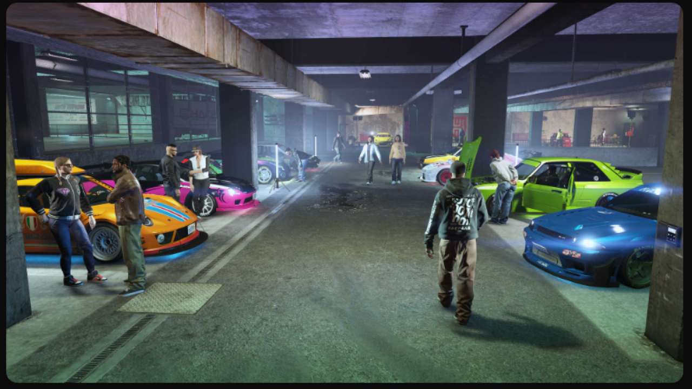

Introduzione
Le GPU sono uno degli elementi chiave che permettono il successo dei videogiochi moderni. Senza di esse, i giochi non potrebbero raggiungere il livello di realismo e fluidità che conosciamo oggi. Le GPU influenzano vari aspetti del gioco, inclusi:
- Renderizzazione dei Grafici: Le GPU sono essenziali per creare immagini 3D complesse, texture realistiche e ambienti dinamici.
- Frame Rate Elevato: Una GPU potente consente di mantenere un frame rate elevato, che è cruciale per un'esperienza di gioco fluida.
- Ray Tracing e Illuminazione Realistica: Le moderne GPU supportano tecniche avanzate come il ray tracing per ottenere ombre e riflessi realistici.
- VR (Virtual Reality): Le GPU sono essenziali per supportare la realtà virtuale, garantendo un'esperienza immersiva e coinvolgente.

Conclusioni
Con l'avanzamento delle tecnologie, le GPU sono diventate il cuore pulsante dei videogiochi moderni, in grado di gestire compiti complessi come il rendering di ambienti 3D, il ray tracing e l'intelligenza artificiale, offrendo esperienze di gioco mai viste prima.